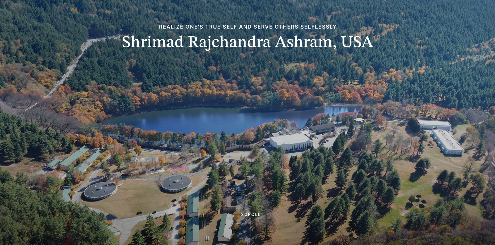

UX/UI Designer
I work at the intersection of clarity, strategy, and craft, building experiences that feel effortless because every decision was intentional.
Learn about me
5+ years building digital products across enterprise SaaS, nonprofit, and consumer environments. Psychology background. Most at home where design and engineering actually talk to each other.